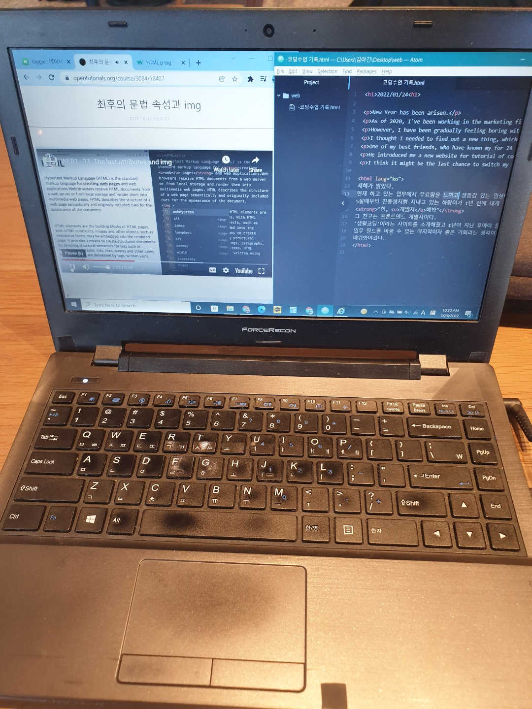

New Year has came up.
As of 2020, I've been working in the marketing industry in Hackers Education.
However, I have been gradually feeling boring with what I'm doing.
I thought I needed to find out a new thing, which can help me to refresh my life.
One of my best friends, who have known my for 24 years, told me
"Hey, bro. You can be Developer in IT field. I can be your help if needed."
He introduced me a new website for tutorial of coding so, I decided to start to learn a code from today.
I think it might be the last chance to switch my working field.
새해가 밝았다.
현재 하고 있는 업무에서 무료함을 느끼고 생동감 있는 일상이 필요했다.
5살때부터 친동생처럼 지내고 있는 하람이가 1년 전에 내게 해줬던 이야기가 떠올랐다.
"형, 개발자해봐"
그 친구는 프론트엔드 개발자이다.
'생활코딩'이라는 사이트를 소개해줬고 1년이 지난 후에야 들어와서 배워보기로 했다.
업무 필드를 바꿀 수 있는 마지막이자 좋은 기회라는 생각이 든다.
배워봐야겠다.